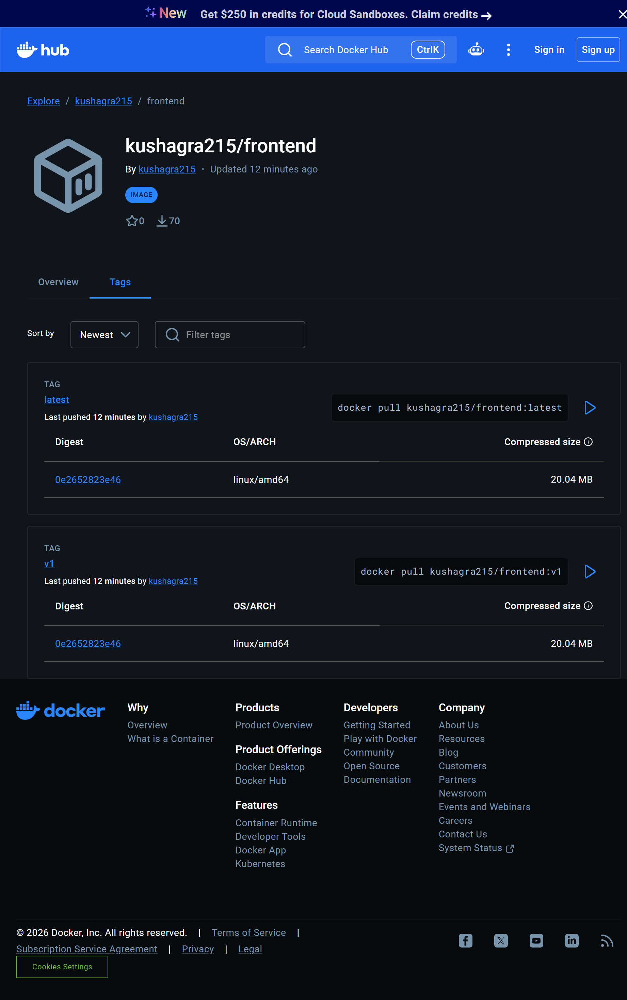
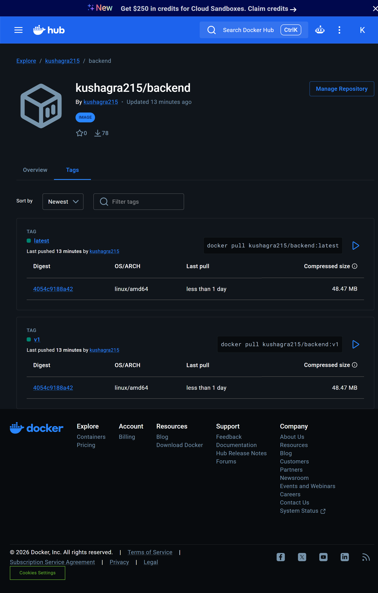
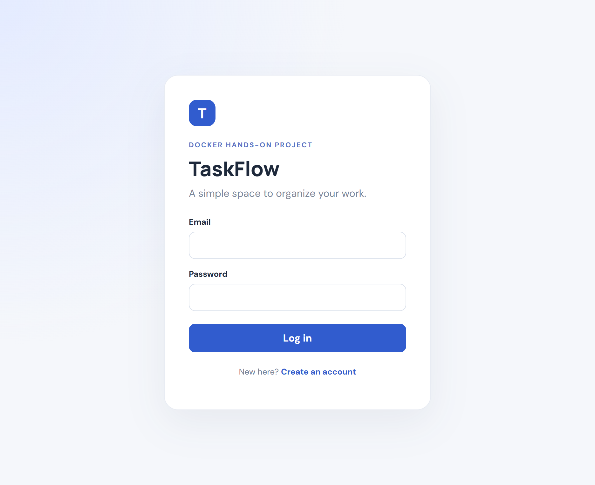

| Student Name | Kush |
|---|---|
| Roll Number | 202401100400113 |
| Section | B |
| Branch | AIML |
| GitHub Username | kush1246 |
| Docker Hub Username | kushagra215 |
| Working branch | docker-set-2/202401100400113-kush-b |
| Fork repository | https://github.com/kush1246/MSE-2-SSED-Evening |
| Original repository | https://github.com/atindeRR/MSE-2-SSED-Evening |
kushagra215/frontend:v1 and kushagra215/frontend:latestkushagra215/backend:v1 and kushagra215/backend:latestThe existing React/Vite frontend and Express/Node.js backend were preserved. Multi-stage frontend and production backend Dockerfiles were created. Docker Compose provides PostgreSQL 16, Redis 7, a custom bridge network, PostgreSQL and Redis named volumes, health checks and health-based dependencies. The image deployment uses only Docker Hub application images.

Genuine browser capture of kushagra215/frontend.

Genuine browser capture of kushagra215/backend.

Genuine browser capture of the running TaskFlow frontend.
NAME IMAGE STATUS PORTS taskflow-deploy-backend-1 kushagra215/backend:latest Up (healthy) 0.0.0.0:3000->3000/tcp taskflow-deploy-frontend-1 kushagra215/frontend:latest Up (healthy) 0.0.0.0:8080->80/tcp taskflow-deploy-postgres-1 postgres:16-alpine Up (healthy) 5432/tcp taskflow-deploy-redis-1 redis:7-alpine Up (healthy) 6379/tcp
[+] build 2/2 ✔ Image taskflow/frontend:local Built ✔ Image taskflow/backend:local Built Final frontend build used node:20-slim for Vite compilation and nginx:1.27-alpine for runtime. Final backend build used node:20-alpine and production dependencies only.
{"status":"ok","postgres":"ok","redis":"ok"}
Frontend HTTP response: 200 OK
PostgreSQL health: healthy
Redis health: healthy
Backend health: healthy
Before recreating PostgreSQL: INSERT result — id 2, title "Persisted Docker Task", status "Pending" PostgreSQL container removed and recreated using the named volume. SELECT id,title,description,status FROM tasks WHERE title='Persisted Docker Task'; id | title | description | status 2 | Persisted Docker Task | Volume recreation proof | Pending
docker compose restart redis redis-cli ping PONG Redis restart logs showed the AOF/RDB files loading successfully and port 6379 becoming ready.
Network: taskflow-deploy_taskflow-net Driver: bridge Subnet: 172.18.0.0/16 Gateway: 172.18.0.1 Frontend IPv4: 172.18.0.5/16 PostgreSQL IPv4: 172.18.0.2/16 Backend IPv4: 172.18.0.4/16 Redis IPv4: 172.18.0.3/16 PostgreSQL and Redis host ports are not published.
Test Suites: 1 passed Tests: 12 passed Time: 3.628 s TC01 health endpoint passed TC02 register user passed TC03 duplicate email passed TC04 login passed TC05 unauthenticated access rejected TC06 create task passed TC07 list tasks passed TC08 Redis cache response passed TC09 update status passed TC10 invalid status rejected TC11 delete task passed TC12 deleted task absent passed
docker compose -f docker-compose.deploy.yml pull 4/4 images pulled docker compose -f docker-compose.deploy.yml up -d Network, volumes and all four services created successfully. All application services reached healthy/running status.
Successfully pushed: kushagra215/frontend:v1 kushagra215/frontend:latest kushagra215/backend:v1 kushagra215/backend:latest
The `.github/workflows/cd.yml` workflow performs checkout, secret validation, Docker Buildx setup, Docker Hub login, builds, four tags, image deployment, health verification and API tests.
Not claimed: no GitHub Actions run URL or Pull Request URL is available until the implementation is pushed and the user completes GitHub secret configuration.
Custom network: taskflow-deploy_taskflow-net Frontend IPv4: on taskflow-deploy_taskflow-net Backend IPv4: on taskflow-deploy_taskflow-net PostgreSQL IPv4: on taskflow-deploy_taskflow-net Redis IPv4: on taskflow-deploy_taskflow-net PostgreSQL and Redis host ports are not published.
Pending approval: push and Pull Request actions were not performed automatically. The report will need the final GitHub Actions run and Pull Request URLs once publication is approved.

Genuine rendered evidence showing Docker builds, container health, image deployment, persistence, Redis, network and tests.
I hereby declare that the submitted implementation has been completed by me. I have tested the Docker configurations, Docker Compose deployment, Docker Hub image publishing and GitHub Actions CI/CD pipeline. The screenshots and evidence included in this document represent my actual implementation.
Student Name: Kush
Roll Number: 202401100400113